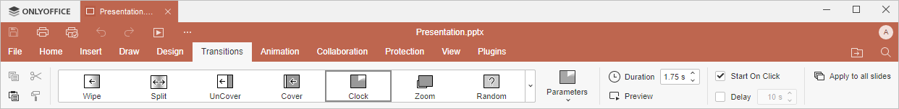

Kartica Prelazi
Kartica Prelazi u Presentation Editor-u omogućava upravljanje prelazima između slajdova. Možete dodavati efekte prelaza, podešavati brzinu prelaza i konfigurisati druge parametre prelaza slajdova kako biste prilagodili svoju prezentaciju.
Odgovarajući prozor Online Presentation Editor-a:

Odgovarajući prozor Desktop Presentation Editor-a:

Korišćenjem ove kartice možete:
- izabrati efekat prelaza,
- podesiti odgovarajuće vrednosti parametara za svaki efekat prelaza,
- definisati trajanje prelaza,
- pregledati prelaz nakon podešavanja,
- odrediti koliko dugo će slajd biti prikazan označavanjem opcija Pokreni klikom i Kašnjenje,
- primeniti prelaz na sve slajdove klikom na dugme Primeni na sve slajdove.